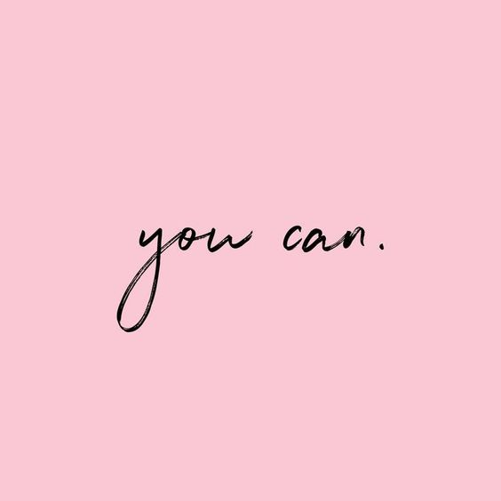
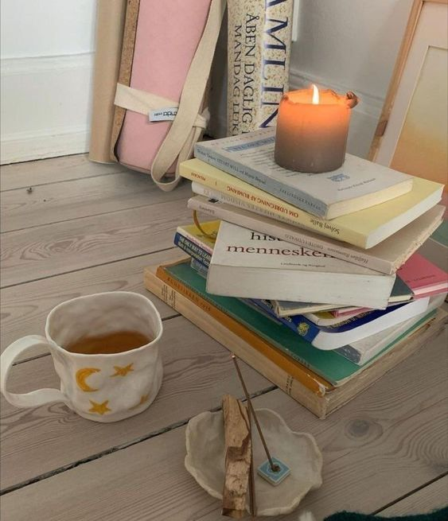

КАК НАЙТИ МОТИВАЦИЮ?
Мотивация – это первый и, пожалуй, самый важный фактор для того, чтобы начать изменять свою жизни и привычки, а также продолжать придерживаться новых принципов и не срываться. Если вы читаете эту статью, значит у вас уже есть желание что-то изменить. Как набраться энергии и перейти от мыслей к действиям? Вот несколько способов.
1. ОТДЕЛЕНИЕ СОБСТВЕННЫХ ЖЕЛАНИЙ ОТ НАВЯЗАННЫХ ИЗВНЕ
Прислушайтесь к себе и задайте вопрос: «Почему я хочу изменить свой образ жизни?» Честно ответив на него, вы сможете отделить свои истинные желания от навязанных обществом или другими людьми. Это важно, так как искреннее внутреннее желание задаёт тот самый тон и толчок к действиям.
Вы действительно недовольны своим состоянием здоровья? Вы чувствуете себя некомфортно в своем теле? Вы замечаете, что вашей физической формы недостаточно для выполнения повседневных телодвижений – одышка при подъёме по лестнице или после пробежки за автобусом? Вы ощущаете дискомфорт после съеденной вредной пищи и поэтому хотите научиться питаться правильно? Если ваши ответы в этом ключе, ваши желания искренние.
А может быть, вам нравится свое тело и вы хотите похудеть, потому что кто-то из ближнего окружения не принимает вас такими, какие вы есть? Или вам хочется быть похожими на красивых девушек-моделей из Инстаграм, не учитывая, что у вас разное телосложение и стремясь походить на кого-то, вы теряете себя и перестаёте быть особенными? В этом случае, ваши желания навязаны вашим окружением и работать нужно вовсе не с вашим весом или фигурой, а с самооценкой и психологическим состоянием.
2. ОСОЗНАНИЕ И ВЗЯТИЕ НА СЕБЯ ОТВЕТСТВЕННОСТИ ЗА СВОЮ ЖИЗНЬ
Очень хочется, чтобы кто-то пришёл и исправил все наши проблемы, сделал нас радостными и счастливыми. Но ключ к вдохновению на изменения лежит внутри вас самих. Осознайте и чаще напоминайте себе, что никто в этом мире не отвечает за вашу жизнь, кроме вас самих. Да, безусловно, у всех есть близкие люди, которым вы доверяете и на которых можете опереться. Но они не обязаны тащить вас на себе и проживать вашу жизнь за вас. И так часто бывает, что люди уходят, а единственный человек, который будет с вами всегда – это вы сами.
Тех людей, которые осуждают и критикуют, на самом деле совершенно не волнует ваше состояние, они делают вас удобными для себя. Поэтому перестаньте быть удобными для кого-то и делать то же самое, возьмите ответственность за свое физическое состояние, за то, как вы выглядите и чувствуете себя, на себя. Только приняв это, вы можете найти инструменты для изменений, стать теми, кем хотите быть и ощущать себя здоровыми и счастливыми в своем теле.
3. ДРОБЛЕНИЕ ГЛОБАЛЬНЫХ И БОЛЬШИХ ЦЕЛЕЙ НА МАЛЕНЬКИЕ ЗАДАЧИ И ДОСТИЖЕНИЯ
Порой найти мотивацию начать новое дело намного проще, чем сохранить ее на протяжении долгого времени. Энергия имеет свойство заканчиваться и вот уже руки опускаются, вы устаёте, даете слабину и срываетесь. Чтобы этого не происходило, важно постоянно пополнять запасы этой самой энергии. Пусть сам процесс достижения цели мотивирует вас. А сделать это можно, разбив единую глобальную цель на множество маленьких, достижение которых отнимает немного времени и сил, и будет радовать вас ежедневно.
Например, взять в кафе овощной салат вместо пиццы или уделить тренировке 40-60 минут в день несколько раз в неделю не так сложно, как похудеть на 10 килограмм. Пусть вашими целями будут небольшие задачи на каждый день, уделив внимание которым вы на шаг приблизитесь к большой цели. Главное – формулируйте их конкретно и каждый вечер хвалите и благодарите себя за выполнение.
4. НАГЛЯДНОЕ ОТСЛЕЖИВАНИЕ ПРОГРЕССА
Не секрет, что мозг имеет свойство долго помнить негативные чувства и быстро забывать позитивные. Именно для этого существуют приемы для отслеживания своих достижений в виде трекеров, таблиц или личного дневника. Записывайте ежедневно, что хорошего и важного вы сделали для достижения своей цели, отмечайте прогресс, к примеру, в количестве выпиваемой воды или проделанных упражнений.
Во-первых, во время записывания информации, она лучше запоминается (не даром школьники и студенты ведут конспекты), так вы не дадите мозгу быстро забыть свои успехи. А во-вторых, при потере мотивации и желания продолжать, вы всегда можете открыть записи и вспомнить, какой большой объем работы вы уже проделали. Это точно вдохновит вас не останавливаться.
5. НАПРАВЛЕНИЕ ВНИМАНИЯ НА УСПЕХИ, А НЕ НЕУДАЧИ
Изменения себя – очень сложный и трудоемкий процесс. Он требует много времени и сил, и длится всю человеческую жизнь, так как всегда есть к чему стремиться, даже если вы достигли некогда поставленной цели. Важно понимать, что ошибки и моменты слабости неизбежны. Вопрос только в том, что вы продолжите делать дальше? Сдадитесь или сделаете перерыв, чтобы продолжить с новыми силами?
Чтобы не терять желание вести здоровый образ жизни, важно отдыхать и не корить себя за неидеальное выполнение своего намеченного плана. Чаще напоминайте себе, что идеала на практике не существует. Да, к нему необходимо стремиться и суть всех достижений именно в этом процессе стремления, но достичь его невозможно и не нужно. Это нормально – иногда быть не в состоянии провести тренировку или позволить себе устроить читмил (осознанный отход от системы питания). Порицание себя за это вгонит вас в еще более грустное состояние, найти силы в котором куда сложнее. Лучше похвалите себя за то, что съели, например, только половину запрещенной шоколадки вместо целой, или пропустили только две тренировки вместо трёх в неделю. И спокойно продолжайте двигаться дальше.
Помните, работа с телом куда проще, чем работа с головой. Здесь нельзя выполнить конкретный набор упражнений и получить быстрый результат. Каждый человек уникален и поэтому каждому нужен индивидуальный подход.